| 日付 | 2017年11月19日（日） |
|---|---|
| 山域 | 奥武蔵 |
| メンバー | 家族（妻、長女・6歳、長男・4歳） |
| 山行形態 | 子連れ日帰り |
| アクセス | 車 |
| ルート (Map) | 鎌北湖第一駐車場 (8:41) - (9:37) 北向地蔵 (9:40) - (10:25) ユガテ (11:39) - (12:03) エビガ坂 - (12:21) スカリ山 (12:53) - (14:00) 鎌北湖 (14:37) - (14:39) 鎌北湖第一駐車場 |
ユガテという名は登山を始めたころから知っていたが、
長い間、未訪の場所だった。
近くに目立ったピークがないというのが大きな理由だが、
それなりに有名な地であり、気になる存在ではある。
晩秋の季節に山村風景を求めて訪れてみることにする。
鎌北湖第一駐車場に到着。標高170m。
6～7割くらい車が埋まっている。
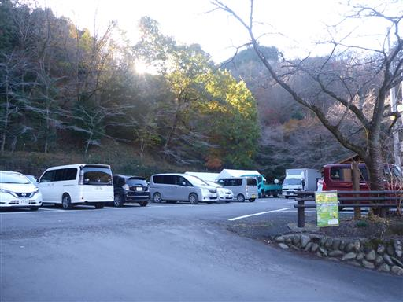
早朝から多くの釣り客が釣りをしている。子供たちは興味津々。
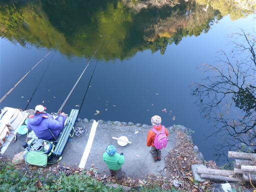
少し湖畔を散策する。鎌北湖は農業用貯水池として作られた小さな人造湖。
今日は風がなく、水面に映る景色が美しい。
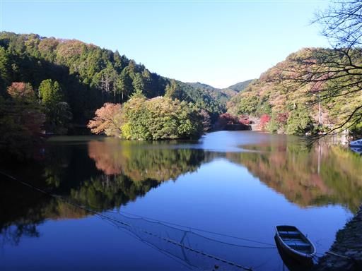
景色を眺めたら、登山口目指して歩き始める。
周囲は紅葉が美しい。
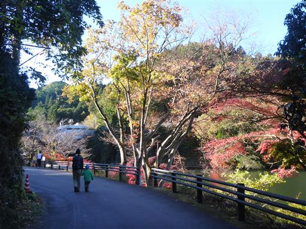
湖の奥にある鎌北湖レイクビューホステルに到着。
古そうな建物だが営業はしているようだ。
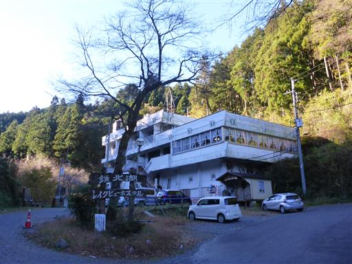
ホステルの裏から登山道が始まる。この辺りは沢沿いの陰気な道だ。
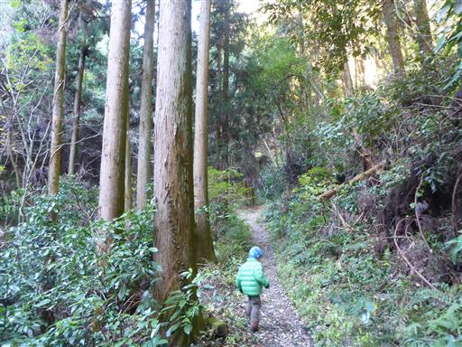
内部がなくなって皮だけになった木の枝を発見。
二人で指を入れて遊んでいる。
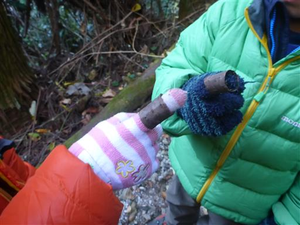
今日は時間があるため自由に遊ばせる。こうなるとなかなか前に進まない。
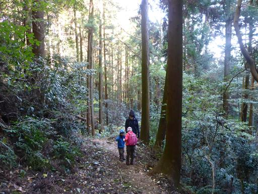
森に光が差し込む。もう9時を過ぎたが太陽はまだ低い位置にある。

車道に出てくる。奥武蔵の山ではよくあることだ。
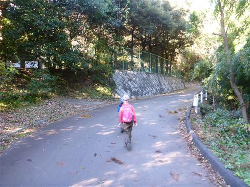
標識に従って再び登山道へ。
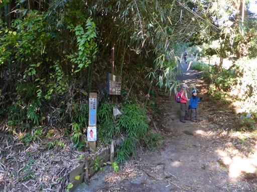
畑のような空間が広がっている。手入れはされているのだろうか？
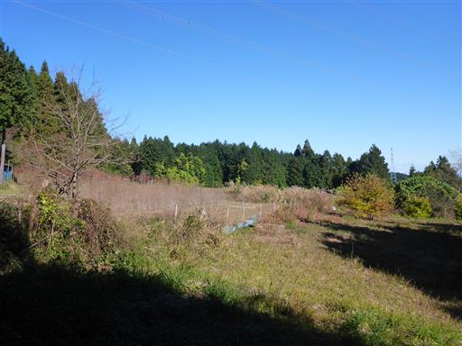
ここからは少しだけ展望が広がる。眼下に見えるのは関東平野だ。
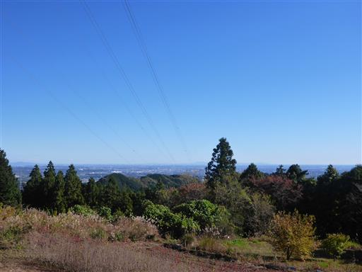
密集した植林地帯。
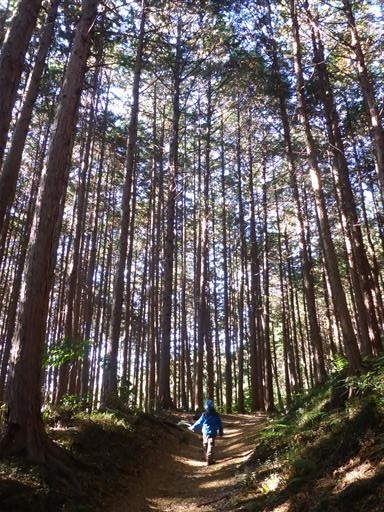
さらに大きな木の皮を発見。望遠鏡のように覗きこんで遊んでいる。
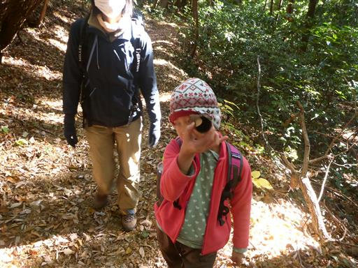
北向地蔵に到着。側にある鐘を鳴らす。
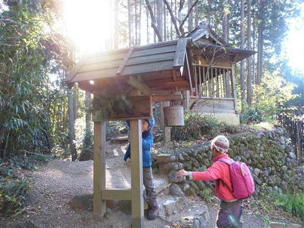
その後、お参り。北を向いているから「北向地蔵」と呼ばれ、同名の地蔵は全国各地にある。
南東西はあまり無いのが不思議だ。北は特別なのだろうか？
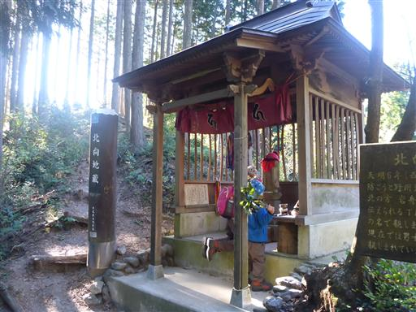
ここで再び車道を横切る。
子供たちは山で拾った戦利品を見せびらかしている。
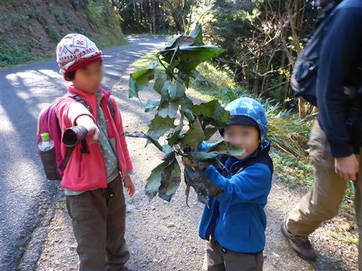
この辺りはシダが生い茂っている。
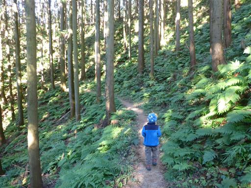
トレイルランの標識。上下逆さの文字も記載されている。
左右どちらの矢印にも対応できる工夫で、頭の良いやり方だ。
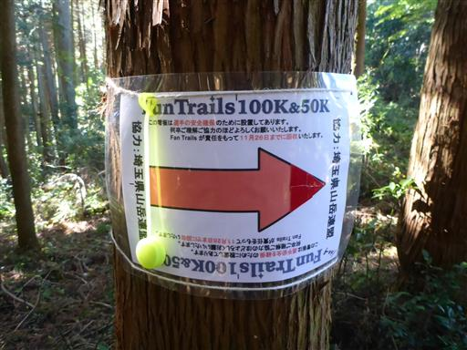
小さな沢に架かる細い橋を渡る。
息子は手を繋がずに慎重に渡ることができた。
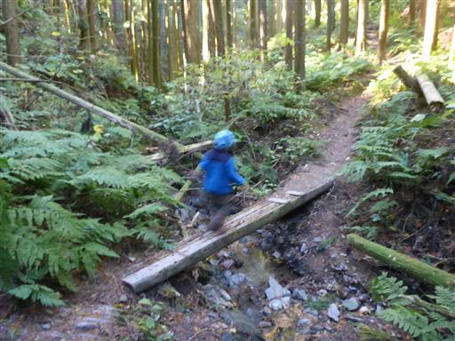
送電線鉄塔があり、視界が広がる。
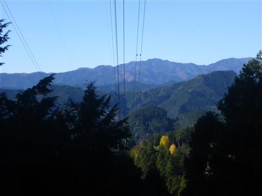
足元に小さな花が咲いている。
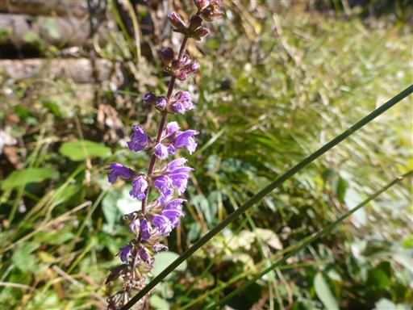
こちらはイチゴの一種だろう。
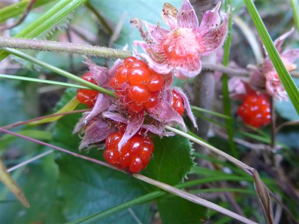
しばらく歩くと周囲は竹林になる。
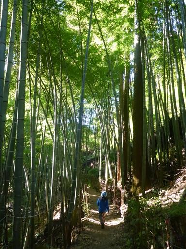
突然視界がパッと開ける。
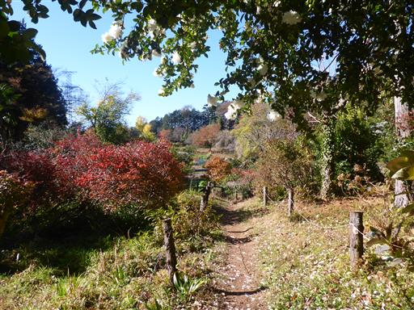
ユガテに到着だ。桃源郷と言われることがあるのも頷ける、美しい風景だ。
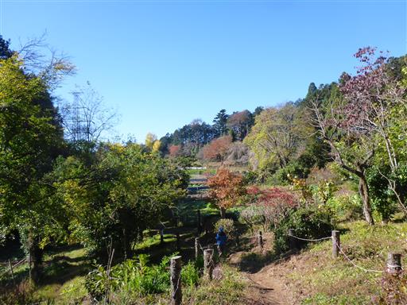
ユガテの民家は2軒のみ。小さな小さな集落だ。
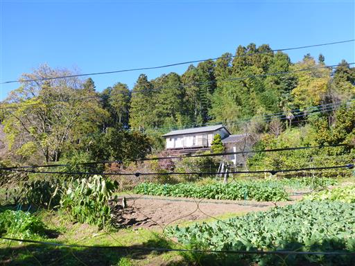
ミカンの木だろうか？たくさんの実がなっている。
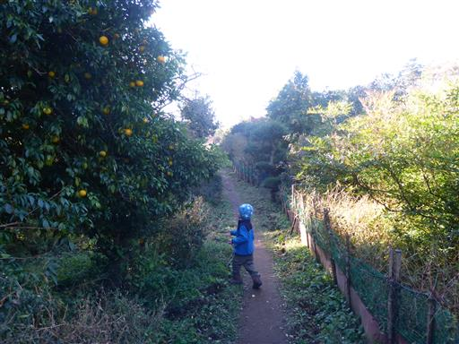
少しだけガマが生えている。
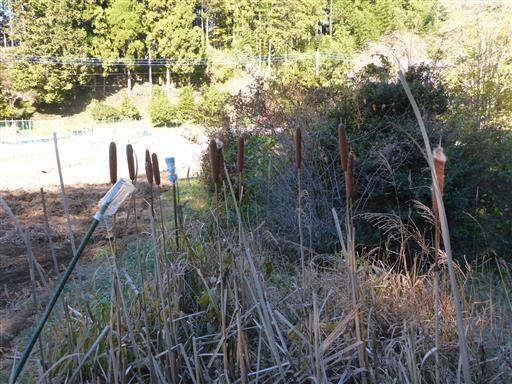
まだ10時半なのだが、子供たちはお腹がすいたとうるさい。
ここより良いスポットもなさそうなので、ちょっと早いがここで昼食タイムにする。
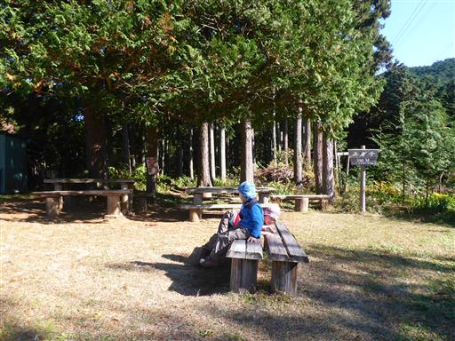
今日はカップラーメンを持ってきている。早速準備を始める。
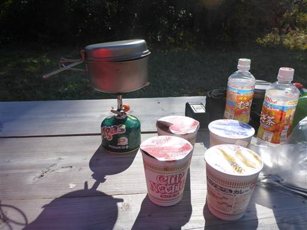
待っている間、子供たちは走り回って遊んでいる。
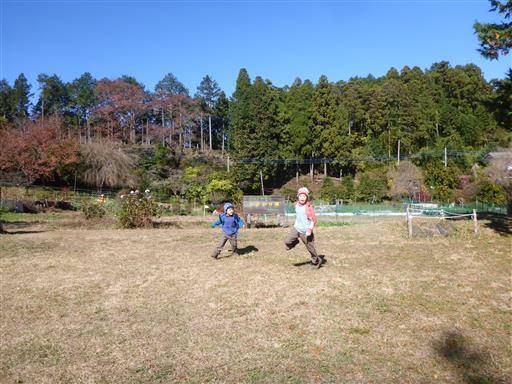
ラーメン完成。次々と登山者がやって来て、賑やかになる。
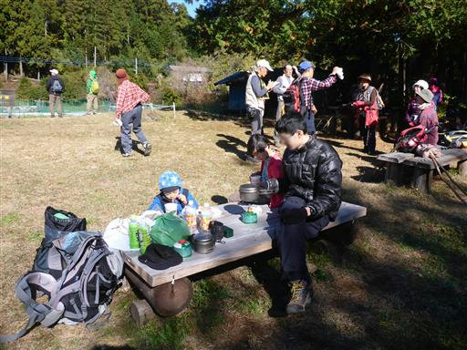
昼食後は周囲を少し散策。畑はみな柵で囲まれている。動物除けだろう。
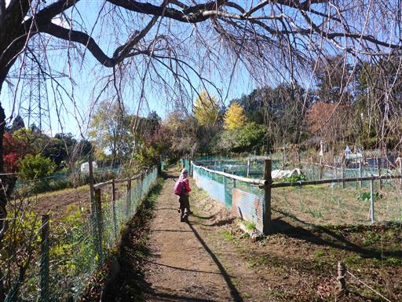
休憩を終えたらエビガ坂に向けて出発する。
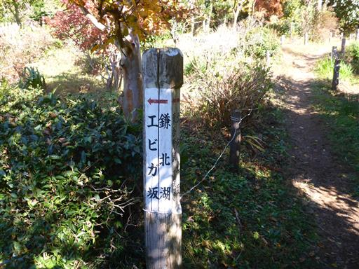
民家の入口のように見えるが、登山道はその中に続いている。
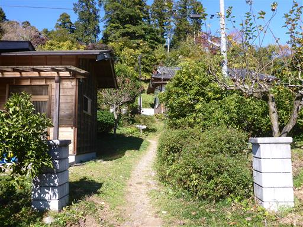
家の間を遠慮がちに通り過ぎていく。
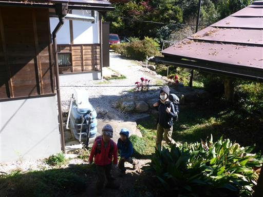
少し高台から里を見下ろす。ユガテは本当に美しい山里だった。
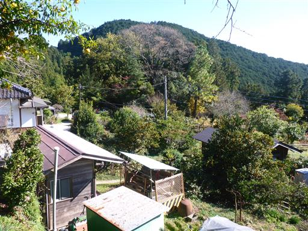
黄葉した葉が１枚だけ風に揺れている。
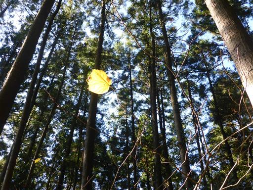
横を向いたペンギンの形をした石。
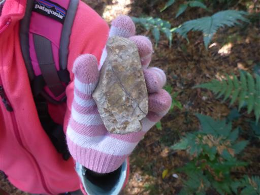
分岐点からスカリ山を往復することにする。
手持ちの古い地図には載っていないが、最近整備された登山道だろうか？

まっすぐつけられた登山道は傾斜がきつい。
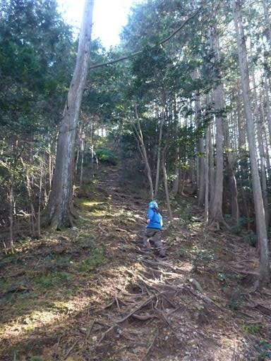
最後は岩場が現れる。迂回路もあったようで、下りはそちらを歩く。
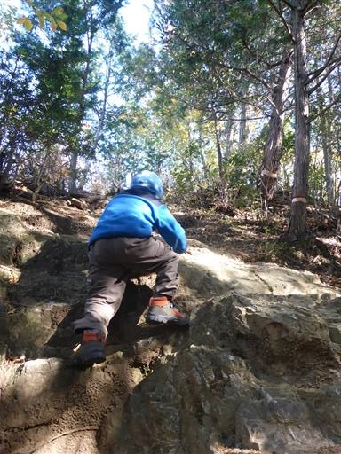
スカリ山の山頂に到着する。標高435m。
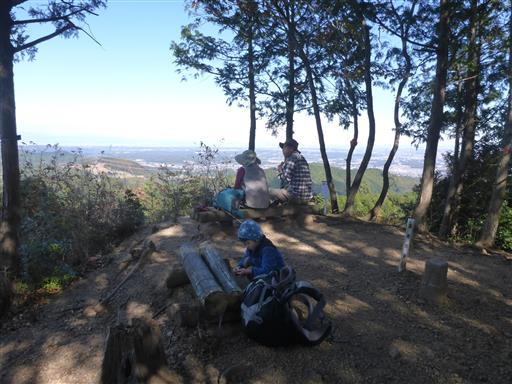
山頂からは素晴らしい展望が広がる。本山行唯一の展望らしい展望だ。
右に目立つピークは武甲山。
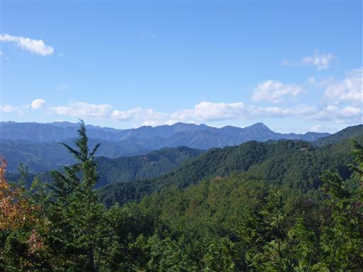
赤城山方面。こちらは残念ながら少し雲が出ている。
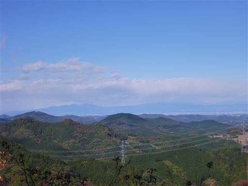
関東平野と筑波山。手前はリアス式海岸のように幾重にも尾根が重なっている。
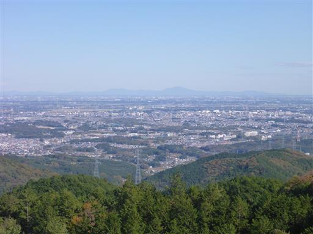
下山道は登り始めの道同様、樹林に覆われた暗い道だ。

最後は林道に出てくる。遠くに民家が見えてきた。
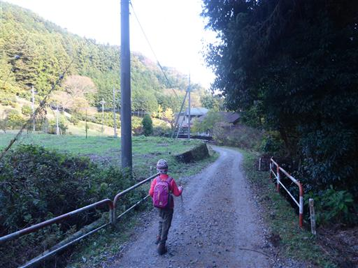
山の斜面にミカン畑が広がっている。
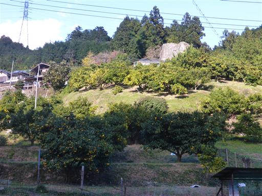
鎌北湖畔に戻ってくる。紅葉が非常に美しい。
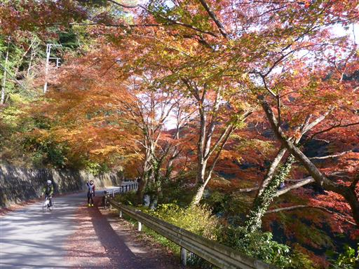
ちょうど光が差して葉が輝いている。
朝は誰も乗っていなかったスワンボートがあちらこちらに浮かんでいる。
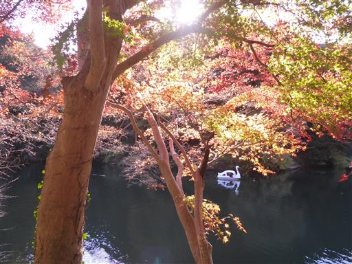
真っ赤なもみじ。周囲は観光客でいっぱいだ。
湖畔のベンチに腰を掛けておやつタイム。
スワンボートに乗りたいとうるさいが、今日は時間がないので却下。

子供たちは釣りの真似事をして遊んでいる。
こちらはダムの下流側。もともと小さな川だったようだ。
今回はユガテの山里風景、スカリ山の展望、鎌北湖の紅葉と
様々な美しい景色を楽しめた山行だった。